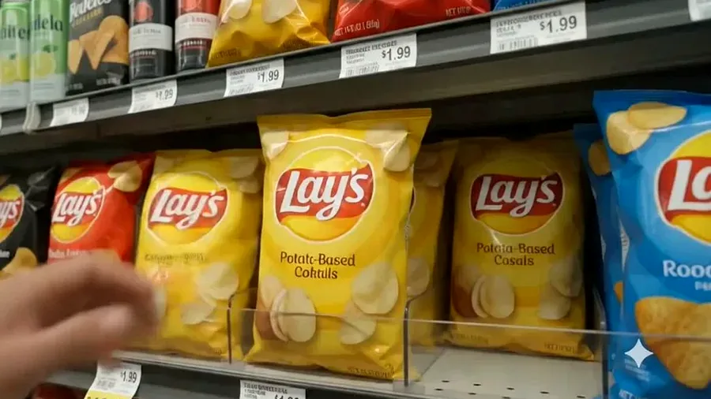
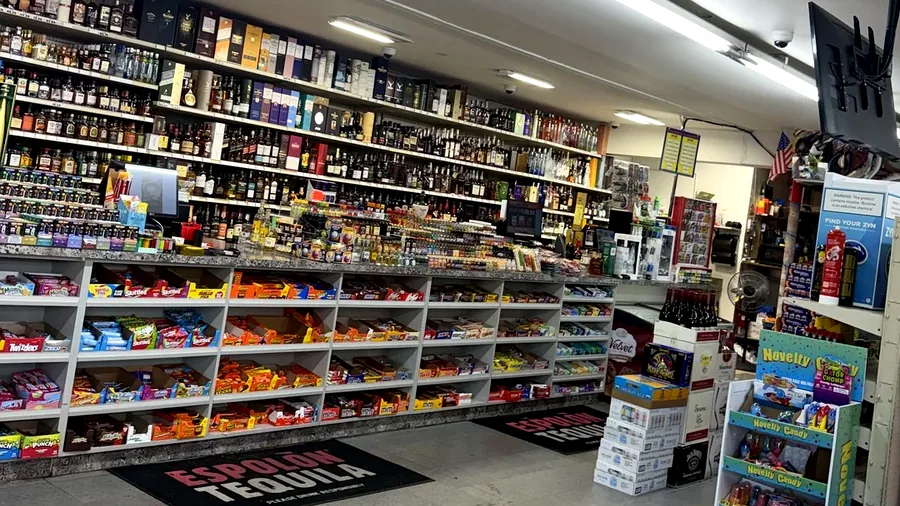
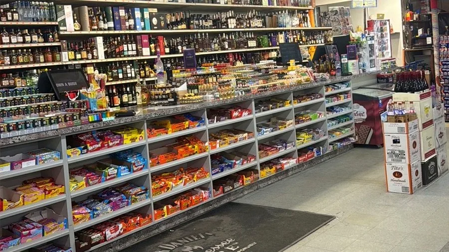
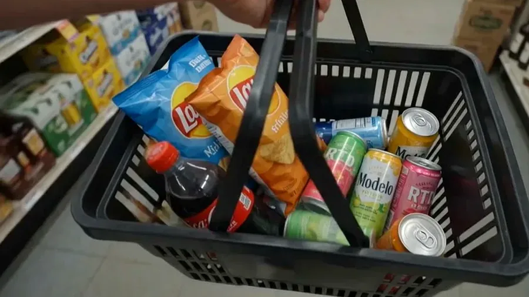
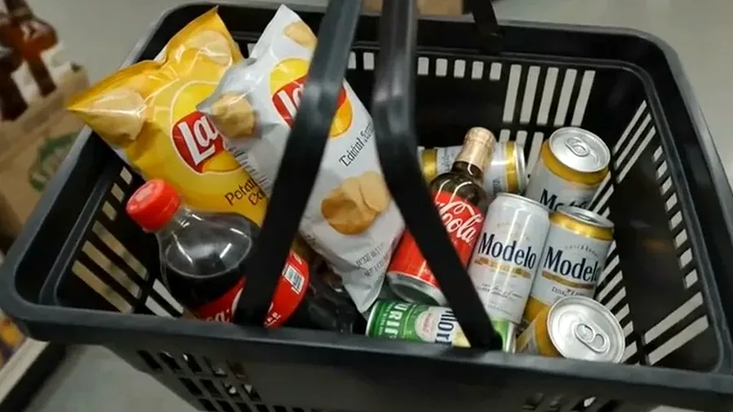

Chips and snacks
Bagged snacks, quick add-ons and practical items for last-minute stops.
Grocery and convenience
Shop snacks, chips, candy, chocolate, soft drinks, water, energy drinks, juice, mixers, grocery basics, lottery and everyday convenience items.


Bagged snacks, quick add-ons and practical items for last-minute stops.

Candy, chocolate and sweet counter-area items for the same visit.

Soft drinks, water, energy drinks, juice, mixers and everyday beverage add-ons.

Build one practical stop around snacks, drinks, candy, grocery basics and checkout items.